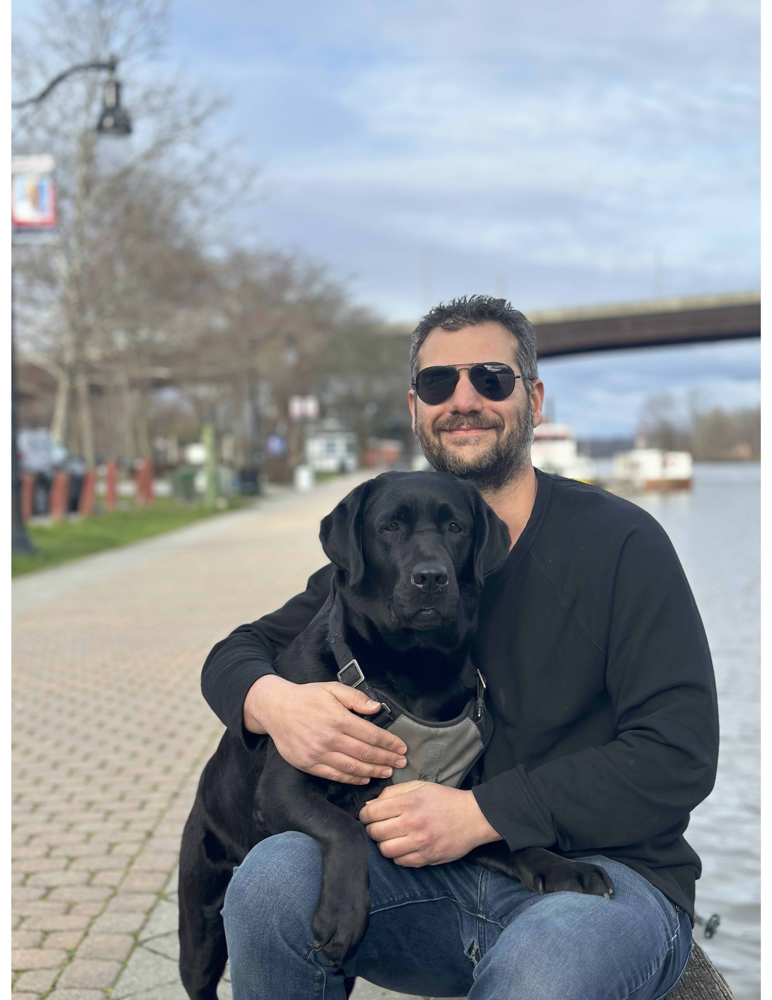

<!-- index.html: Landing page -->
<!DOCTYPE html>
<html lang="en">

<head>
    <meta charset="UTF-8">
    <meta name="viewport" content="width=device-width, initial-scale=1.0">
    <!-- Meta description for SEO -->
    <meta name="description" content="Developer Portfolio of Alex Hamadey" />
    <title>Alex Hamadey | Portfolio</title>
    <!-- Link to the shared CSS file -->
    <link rel="stylesheet" href="assets/css/style.css" />

</html>

<!-- Header with navigation (common to all pages) -->

<body class="landing-page">
    <div class="social-sidebar">
        <a href="https://github.com/ahamadey27" target="_blank"></a>
        <a href="https://www.linkedin.com/in/alex-hamadey/" target="_blank"></a>
    </div>
    <a href="mailto:hamadey@gmail.com" class="email-vertical">hamadey@gmail.com</a>
    <header>
        <nav style="display: flex; justify-content: space-between; align-items: center;">
            <a href="index.html" class="logo">Alex Hamadey</a>
            <ul>
                <ul>
                    <li><a href="about.html"><span class="nav-number">01.</span> About</a></li>
                    <li><a href="experience.html"><span class="nav-number">02.</span> Experience</a></li>
                    <li><a href="projects.html"><span class="nav-number">03.</span> Projects</a></li>
                    <li><a href="contact.html"><span class="nav-number">04.</span> Contact</a></li>
                    <li><a href="assets/AlexHamadey_Resume.pdf" class="resume-link" target="_blank">Resume</a></li>
                </ul>
        </nav>
    </header>

    <!-- Main content for about page -->
    <main>
        <section class="about about-flex" style="display: flex; flex-direction: row; align-items: flex-start; justify-content: space-between; height: 100%; min-height: 0;">
            <div class="about-text-col" style="flex:2; display:flex; flex-direction:column; justify-content:center;">
                <h1 class="section-title" style="margin-bottom:2rem;">About Me</h1>
                <p>I’m a junior software developer eager to grow within a collaborative team environment that values shared problem-solving throughout the entire software development lifecycle.</p>

                <p>I’m transitioning from my previous career as a sound designer for commercials, mixed media, and video games. That work demanded consistent, real-time client communication, where I often had to translate non-technical explanations into sonic results—a skill that translates across industries. It was also common for me to quickly learn complicated software on the spot, such as an app that uses targeted algorithms to silence unwanted noise or a plugin that generates 5.1 sound from a stereo file. However, the most important skill I gained was leveraging programming languages to solve hyper-specific problems when no third-party solutions existed. For example, I used ChucK to create a function that rendered synthetic bird calls for a sample pack and Python to automatically convert and render audio files based on certain rules.</p>

                <p>As I moved toward custom software solutions, I began freelancing as a video game sound designer. There, I learned C# to implement and maintain audio pipelines in Unity and wrote event-based scripts to connect middleware audio management applications like Wwise. I also coded and designed a video game from scratch, which is now available on Steam. As my fascination with programming grew, I enrolled in The Tech Academy’s full stack bootcamp, and shortly after graduating, I committed fully to pursuing software development.</p>

                <p>Recently, I’ve been building web applications using C#, ASP.NET, and Azure to address specific problems. For example, I built a Samurai Movie Database to organize my extensive DVD collection of the genre using Entity Framework and SQLite, and a Wake Advisor that fetches tide and vessel data from external APIs to predict the best time to surf the wake of large southbound freighters on the Hudson River. I’m currently working on a SaaS web application that tracks administered medications for animal shelters using Firebase on the backend, with a targeted release later this year. I’m also contributing to open source software to gain more collaborative real-world  experience.</p>
            </div>
            <div class="about-img-col" style="flex:1; display:flex; align-items:flex-start; justify-content:flex-end; margin-top:0; margin-right: 60px;">
                
            </div>
        </section>
    </main>

    <!--Footer Section-->
    <footer>
        <div class="footer-container">
            <div class="social">
                <!-- Social media icons (replace '#' with your actual profile URLs) -->
                <a href="https://github.com/ahamadey27" target="_blank"></a>
                <a href="https://www.linkedin.com/in/alex-hamadey/" target="_blank"></a>
            </div>
            <div class="contact-info">
                <!-- Email (mailto link) and location. The bullet (•) separates the items -->
                <a href="mailto:hamadey@gmail.com">hamadey@gmail.com</a> &bull;
                <span class="location">Kingston/NYC, NY</span>
            </div>
        </div>
    </footer>
</body>

</html>